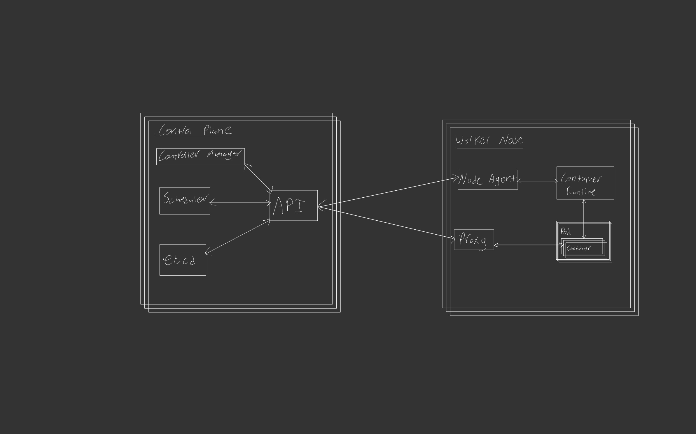
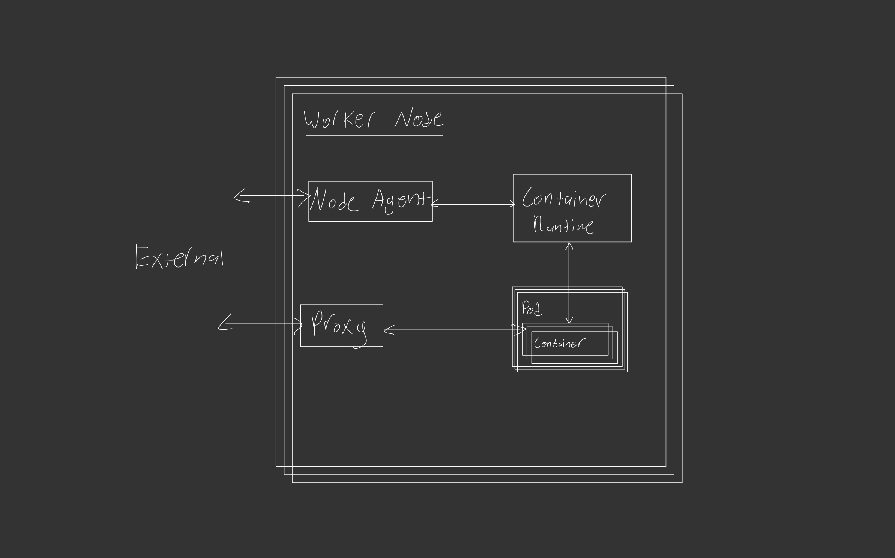
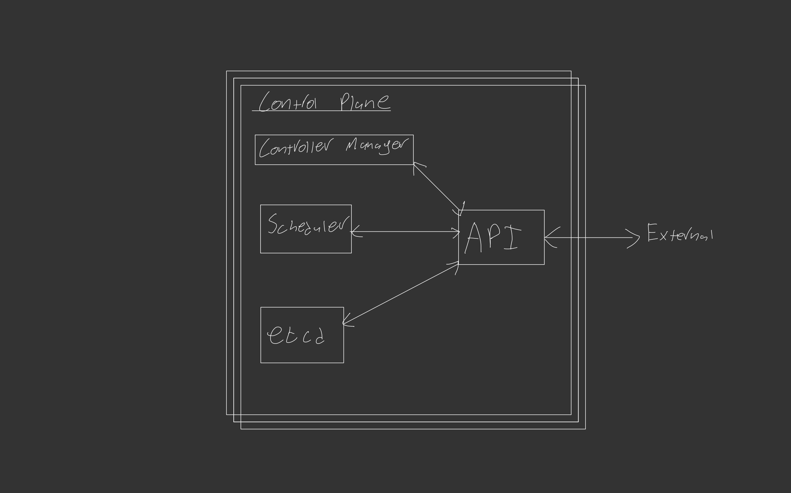

What is it
Kubernetes (k8s) is a system for container orchestration. Kubernetes is not a Container Runtime such as Docker. Kubernetes sits above and manages those containers.
Why is it useful
Deploying a containerised platform brings many benefits to both application managers and consumers such as:
- Faster deployment - Containers can be spun up and down in seconds
- Portability - Containers can be deployed on any supported OS and always work the same
- Standardisation - Container installs are always based on a released Container Image
With Kubernetes deployed to manage these containers we get even more impressive benefits:
- High Availability- Run Pods of Containers across different Nodes to achieve fault tolerance
- Self healing - Automatically get containers back into a running state after failure
- Scaling - Automatically scale Pods and Nodes to take up demand changes on the fly
- CICD - Update Containers automatically with a push to the Image Repository. (Can specify what version to pull if not wanted).
- Microservices - A microservices architecture allows all elements of a system to work and scale independently in isolation.
How does it work
Now lets get to the meat of if, how does Kubernetes work, to set expectations I will be covering the basic architecture of a standard kubernetes setup not the in-depth backend workings.
At Kubernetes core there are two main components:
- Control Plane - The brain of kubernetes (Does the control)
- Nodes - The body of kubernetes (Does the work)
In a cloud environment your cloud provider will almost always manage the control plane and let you decide what goes onto the Nodes (Aka Cloud manages the infrastructure and you choose what it does).
Both of these core components are typically ran across different servers with multiple instances of each running to allow for High Availability across both the Kubernetes management and the jobs running in the Nodes.

Nodes
Nodes are individual instances of computers running, these can have any supported OS and are typically VM’s such as EC2 instances in AWS just like you would use in a classical computing environment.
Nodes run the Containers through a Container Runtime most commonly Docker.
Nodes (sometimes called Worker Nodes) are made of four main components :
- Container Runtime
- Containers
- Node Agent
- Proxy (Not always required) 
Container Runtime
A container runtime (almost always Docker) is used to run the desired containers.
Containers
Containers are your packaged software that is running on the Node such as a database, API, Backend service, frontend server etc… These containers are ran in logical groups called Pods that can be scaled as required.
Node Agent
A node agent sits on your node and collects data about your Pods and Containers spun up by kubernetes.
In kubernetes the default node agent is called kubelet
Proxy
A Proxy is installed on nodes to allow Kubernetes services to be implemented. This allows for exposing network points to Pods that require it. If this is not a requirement a proxy does not need to be installed.
As Pods are spun up and down as required with differing IP’s a proxy allows a specific Kubernetes services address to be used and the proxy can re-direct this traffic depending on what Pods are currently up.
The default kubernetes proxy is kube-proxy.
Control Plane
The control plane is the brain of kubernetes, this is where kubernetes manages the clusters state. The control plane, in production, typically sit separate from the worker Nodes to ensure High Availability.
In a typical cloud deployment, the control plane is offered off the shelf with your cloud providers structure ready for your configuration.
Four core parts make up the Control plane
- API
- Controller Manager
- Scheduler
- etcd 
API
The Application Programming Interface acts as the interface layer for the control plane as well as between control plane components. Any communication to/from the control plane occurs through this API. The default controller manager is kube-apiserver.
Controller Manager
The Controller Manager is the component of kubernetes that monitors the status of Nodes through the API, detecting node failures and spinning up new nodes as required. The controller manager can be configured to manage based on many criteria using different controllers such as Autoscaling.
The default controller manager is kube-controller-manager.
Scheduler
The scheduler is the component of kubernetes that monitors load on the Pods and selects which node they should run on.
The default scheduler is kube-scheduler.
etcd
etcd is the core datastore for kubernetes, any information kubernetes needs to keep such as keys, configuration date, cluster states etc.. etcd stores and serves its data over kube-apiserver. A High Availability etcd can be run in two different modes:
- Stacked - etcd runs on the Control Plane nodes
- External - etcd runs on separate nodes
There are lots of reasons to pick either but the core difference is stacked requires less control nodes but has less redundancy in case of failure.
What if my application is stateful
Kubernetes pods scale up and scale down based on needs, this means any data associated to that pod that will also be scaled down, these are known as Ephemeral. Certain applications change how they respond based on what has happened previously and thus require some level of history to be stored, in Kubernetes this is completed through a Stateful Set and storing Pods data in an automatically linked Persistent Volume Claim.
Other applications for example a OPC server may require some level of config to be stored to define how the OPC server should act. This can be completed through a Persistent Volume Claim storing the configuration which can then be accessed from any active Pods.
Other info
K8s is a great tool for production systems dealing with lots of complex systems all scaling in parallel. In the world where the complexity isn’t required and a more simple installation is required there are a few other options that follow the same principles as a full k8s install such as:
- Minikube - All runs on 1 VM so good for testing but loose most benefits of kubernetes
- k3s - Lightweight kubernetes, missing some kubernetes functionality but doesn’t use docker by default.
- Microk8s - Production ready kubernetes, missing some kubernetes configuration options. These are commonly deployed in bare-metal approaches where you are already restricted by hardware.
Getting Started
If you’re on-board and want to start making a High Availability Kubernetes cluster, you can start to setup your installation using kubeadm to quickly get a production ready cluster running or go to your favourite cloud provider and spin up a cluster in minutes.